유통관리사-2급 (2022-11-19 기출문제)
1과목: 유통물류일반
1. 국제물류주선업에 관련된 설명으로 가장 옳지 않은 것은?
- 화주에게 운송에 관련된 최적의 정보를 제공하고 물류비, 인력 등을 절감하는 데 도움을 줄 수 있다.
- 일반적으로 선사는 소량화물을 직접 취급하지 않기 때문에 소량화물의 화주들에게는 무역화물운송업무의 간소화와 운송비용 절감의 혜택을 제공할 수 있다.
- 국제물류주선인은 다수의 화주로부터 위탁받은 화물로 선사에 보다 효과적인 교섭권을 행사하여 유리한 운임률 유도를 통해 규모의 경제 효과를 창출할 수 있다.
- 안정적 물량 확보를 위해 선사는 국제물류주선인과 계약하는 것보다 일반화주와 직접 계약하는 것이 유리하다.
- NVOCC(Non-Vessel Operating Common Carrier)는 실제운송인형 복합운송인에 속하지 않는다.
(정답률: 70%)

2. 소비자기본법(법률 제17799호, 2020.12.29., 타법개정)에 의한 소비자의 기본적 권리로만 바르게 짝지어진 것은?
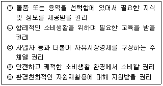
- ㉠, ㉡, ㉢, ㉣, ㉤
- ㉠, ㉡, ㉢
- ㉠, ㉡, ㉣
- ㉡, ㉢, ㉤
- ㉡, ㉣, ㉤
(정답률: 38%)
3. 재고관리에 대한 설명으로 가장 옳지 않은 것은?
- 소비자가 원하는 상품을 적시에 제공하기 위하여 소매점은 항상 적절한 양의 재고를 보유해야 할 필요가 있다.
- 재고가 지나치게 많을 경우, 적절한 시기에 처분하기 위해 상품가격을 인하시켜 판매하기 때문에 투매손실이 발생할 수 있다.
- 재고가 너무 적은 경우 소비자의 수요에 대응할 수 없는 기회손실이 발생할 수 있다.
- 투매손실이나 기회손실이 발생하지 않도록 하기 위해서 유지해야 하는 적정 재고량은 표준재고이다.
- 재고가 적정 수준 이하가 되면 미리 결정해둔 일정주문량을 발주하는 방법은 상황 발주법이다.
(정답률: 58%)
4. 경로 지배를 위한 힘의 원천으로 가장 옳지 않은 것은?
- 보상적 힘
- 협력적 힘
- 합법적 힘
- 준거적 힘
- 전문적 힘
(정답률: 50%)
5. 산업재와 유통경로에 대한 설명으로 가장 옳지 않은 것은?
- 산업재는 원자재의 저가격협상과 수급연속성, 안정적인 공급경로의 구축이 중요하다.
- 설비품(고정장비)은 구매결정자의 지위가 낮으며 단위당 가격이 낮고 단기적 거래가 많다.
- 윤활유, 잉크 등과 같은 운영소모품의 거래는 구매 노력이 적게 들기에 구매결정자의 지위나 가격이 낮다.
- 산업재는 제조업자와 소비자 간의 직접판매가 많고 소비재보다는 경로가 짧고 단순하다.
- 산업재 중 못, 청소용구, 페인트 같은 수선소모품은 소비재 중 편의품과 같은 성격을 갖고 있다.
(정답률: 49%)
6. JIT(Just-in-time)와 JIT(Just-in-time) Ⅱ와의 차이점에 대한 설명으로 가장 옳지 않은 것은?
- JIT는 부품과 원자재를 원활히 공급받는 데 초점을 두고, JITⅡ는 부품, 원부자재, 설비공구, 일반자재 등 모든 분야를 공급받는 데 초점을 둔다.
- JIT가 개별적인 생산현장(plant floor)을 연결한 것이라면, JITⅡ는 공급체인 상의 파트너의 연결과 그 프로세스를 변화시키는 시스템이다.
- JIT는 자사 공장 내의 무가치한 활동을 감소ㆍ제거하는데 주력하고, JITⅡ는 기업 간의 중복업무와 무가치한 활동을 감소ㆍ제거하는데 주력한다.
- JIT가 풀(pull)형인 MRP와 대비되는 푸시(push)형의 생산방식인데 비해, JITⅡ는 JIT와 MRP를 동시에 수용할 수 있는 기업 간의 운영체제를 의미한다.
- JIT가 물동량의 흐름을 주된 개선대상으로 삼는 데 비해, JITⅡ는 기술, 영업, 개발을 동시화(synchronization)하여 물동량의 흐름을 강력히 통제한다.
(정답률: 43%)
7. 공급사슬관리(SCM)를 위해 활용할 수 있는 지연전략(postponement strategy)에 대한 설명으로 가장 옳은 것은?
- 지연전략은 고객의 수요를 제품설계에 반영하기 위해 완제품의 재고보유 시간을 최대한 연장시키는 전략이다.
- 주문 이전에는 모든 스웨터를 하얀색으로 생산한 후 주문이 들어오면 염색을 통해 수요에 맞춰 공급하는 것은 지리적 지연전략이다.
- 가장 중요한 창고에 재고를 유지하며, 지역 유통업자들에게 고객의 주문을 넘겨주거나 고객에게 직접 배송하는 것은 제조 지연전략이다.
- 컴퓨터의 경우, 유통센터에서 프린터, 웹캠 등의 장치를 조립하거나 포장하는 것은 지리적 지연전략이다.
- 자동차를 판매할 때 사운드 시스템, 선루프 등을 설치옵션으로 두는 것은 결합 지연전략이다.
(정답률: 33%)
8. 경영성과 분석을 위해 글상자 안의 활동성 비율들을 계산할 때 공통적으로 사용되는 요소로 가장 옳은 것은?
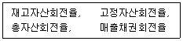
- 재고자산
- 자기자본
- 영업이익
- 매출액
- 고정자산
(정답률: 45%)
9. 각 점포가 독립된 회사라는 점에서 프랜차이즈 체인방식과 같지만, 조직의 주체는 가맹점이며 전 가맹점이 경영의 의사결정에 참여한다는 차이점이 있는 연쇄점(chain)의 형태로 가장 옳은 것은?
- 정규연쇄점(regular chain)
- 직영점형 연쇄점(corporate chain)
- 조합형 연쇄점(cooperative chain)
- 마스터 프랜차이즈(master franchise)
- 임의형 연쇄점(voluntary chain)
(정답률: 45%)
10. 아래 글상자의 내용을 6시그마 도입절차대로 나열한 것으로 가장 옳은 것은?
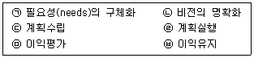
- ㉤ - ㉥ - ㉠ - ㉡ - ㉢ - ㉣
- ㉡ - ㉢ - ㉣ - ㉤ - ㉥ - ㉠
- ㉢ - ㉣ - ㉤ - ㉥ - ㉠ - ㉡
- ㉣ - ㉤ - ㉥ - ㉠ - ㉡ - ㉢
- ㉠ - ㉡ - ㉢ - ㉣ - ㉤ - ㉥
(정답률: 50%)
11. 정량주문법과 정기주문법을 적용하기 유리한 경우에 대한 상대적인 비교로 가장 옳은 것은?
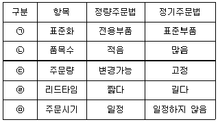
- ㉠
- ㉡
- ㉢
- ㉣
- ㉤
(정답률: 34%)
12. 제품/시장 확장그리드(product/market expansion grid)에서 기존제품을 가지고 새로운 세분시장을 파악해서 진출하는 방식의 기업성장전략으로 가장 옳은 것은?
- 시장침투전략(market penetration strategy)
- 시장개발전략(market development strategy)
- 제품개발전략(product development strategy)
- 다각화전략(diversification strategy)
- 수평적 다각화전략(horizontal diversification strategy)
(정답률: 38%)
13. 공급사슬을 효율적 공급사슬과 반응적 공급사슬로 구분하여 설계할 때 반응적 공급사슬에 대한 특징으로 가장 옳지 않은 것은?
- 리드타임을 적극적으로 단축하려 노력한다.
- 여유생산능력이 높다.
- 저가격, 일관된 품질이 납품업체 선정기준이다.
- 제품 혹은 서비스의 다양성을 강조하는 생산전략이다.
- 신속한 납기가 가능할 정도의 재고 투자를 한다.
(정답률: 47%)
14. 아래 글상자의 물류채산분석 회계 내용에 대한 설명으로 가장 옳지 않은 것은?
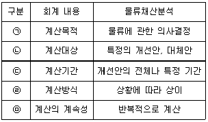
- ㉠
- ㉡
- ㉢
- ㉣
- ㉤
(정답률: 32%)
15. 프로젝트 조직에 대한 내용으로 가장 옳지 않은 것은?
- 과제 진행에 따라 인력 구성의 탄력성이 존재한다.
- 목적달성을 지향하는 조직이므로 구성원들의 과제해결을 위한 사기를 높일 수 있다.
- 기업 전체의 목적보다는 사업부만의 목적달성에 더 관심을 기울이게 된다.
- 해당 조직에 파견된 사람은 선택된 사람이라는 우월감이 조직 단결을 저해하기도 한다.
- 전문가로 구성된 일시적인 조직이므로 그 조직 관리자의 지휘능력이 중요하다.
(정답률: 49%)
16. 소비재의 유형별로 일반적인 경로목표를 설정할 경우에 대한 설명으로 가장 옳지 않은 것은?
- 편의품의 경우 최대의 노출을 필요로 하기에 개방적 유통을 사용한다.
- 일부 의약품은 고객 편의를 위해 편의점을 통한 개방적 유통을 사용하기도 한다.
- 이질적 선매품의 경우 품질비교가 가능하도록 유통시킨다.
- 동질적 선매품의 경우 가격비교가 용이하도록 유통시킨다.
- 전문품은 구매횟수가 정기적인 것이 특징이기에 개방적 유통을 사용한다.
(정답률: 56%)
17. A사의 제품은 연간 19,200개 정도가 판매될 것으로 예상되고 있다. 제품의 1회 주문비용은 150원, 제품당 연간 재고유지비가 9원이라고 할 때 경제적주문량(EOQ)으로 가장 옳은 것은?
- 600개
- 650개
- 700개
- 750개
- 800개
(정답률: 30%)
18. 아래 글상자의 괄호 안에 들어갈 용어를 순서대로 바르게 나열한 것으로 가장 옳은 것은?
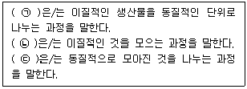
- ㉠ 배분, ㉡ 집적, ㉢ 구색
- ㉠ 구색, ㉡ 집적, ㉢ 분류
- ㉠ 분류, ㉡ 구색, ㉢ 배분
- ㉠ 배분, ㉡ 집적, ㉢ 분류
- ㉠ 집적, ㉡ 구색, ㉢ 분류
(정답률: 54%)
19. 인플레이션 상황에서 급격한 가격인상 없이 매출과 수익의 손실을 막기 위해 유통기업들이 채택할 수 있는 방법으로 가장 옳지 않은 것은?
- 취급하는 상품의 종류를 재정비하여 재고비용이나 수송비용을 줄인다.
- 생산성이 낮은 인력이나 시설을 정리하고 정보화를 통해 이를 대체한다.
- 무료설치, 운반, 장기보증 같은 부가적 상품서비스를 줄이거나 없앤다.
- 포장비를 낮추기 위해 더 저렴한 포장재를 이용한다.
- 절약형 상표, 보급형 상표의 비중을 줄인다.
(정답률: 45%)
20. 서비스 유통의 형태인 플랫폼 비즈니스(platform business)에 대한 설명으로 가장 옳지 않은 것은?
- 플랫폼을 통해 사람과 사람, 사람과 사물을 연결함으로써 새로운 유형의 서비스가 창출된다.
- 정보통신기술의 발달은 사람 간의 교류를 더 빠르고 효율적으로 실현시키면서 플랫폼 비즈니스 성장에 긍정적인 영향을 미치고 있다.
- 플랫폼 비즈니스의 구성원은 플랫폼 구축자와 플랫폼 사용자로 크게 나뉜다.
- 플랫폼은 소식, 물건, 서비스 등 다양한 유형의 콘텐츠 교류가 가능하게 해주는 일종의 장터이다.
- 플랫폼 비즈니스 사업자는 플랫폼을 제공해주는 대가를 직접적으로 취할 수 없으므로, 광고 등을 통해 간접적으로 수익을 올리는 비즈니스 모델이다.
(정답률: 56%)
21. 수직적 통합이 일어나는 경우 합병하는 회사측은 현실적으로 여러 문제점에 직면할 수 있는데 이에 대한 설명으로 가장 옳지 않은 것은?
- 분업에 따른 전문화의 이점을 누리기 힘들어진다.
- 유통경로 구성원 간의 관계를 경쟁관계로 바뀌게 한다.
- 조직의 슬림화로 인해 구성원의 업무량이 증가한다.
- 통합하려는 기업은 많은 자금을 합병에 투입하게 된다.
- 조직관리에 많은 비용을 소모하게 되어 경기가 좋지 않을 때에는 자금부담이 생길 수 있다.
(정답률: 40%)
22. 아래 글상자에서 설명하는 개념으로 옳은 것은?
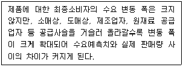
- 블랙 스완 효과(black swan effect)
- 밴드 왜건 효과(band wagon effect)
- 채찍 효과(bullwhip effect)
- 베블렌 효과(Veblen effect)
- 디드로 효과(Diderot effect)
(정답률: 61%)
23. 파욜(Fayol)의 조직원리에 대한 설명으로 가장 옳지 않은 것은?
- 각각의 종업원들은 오직 한명의 관리자에게 보고한다.
- 최고관리자에게 부여된 의사결정력의 크기는 상황에 따라 변화한다.
- 마케팅, 재무, 생산 등의 전문적인 분야의 기능들은 통합된다.
- 조직의 목표는 개인 각각의 목표보다 우선시 된다.
- 종업원들은 누구에게 보고해야 하는지 알아야 한다.
(정답률: 34%)
24. 기업윤리의 중요성을 강조하기 위해 취할 수 있는 방법으로 가장 옳지 않은 것은?
- 기업윤리와 관련된 헌장이나 강령을 만들어 발표한다.
- 기업의 모든 의사결정 프로세스에서 반영될 수 있게 모니터링한다.
- 윤리경영의 지표로서 정성적인 지표는 적용하기 힘드므로 계량적인 윤리경영지표만을 활용한다.
- 조직 내의 문제점을 제기할 수 있는 제도를 활성화한다.
- 윤리기준을 적용한 감사 결과를 조직원과 공유한다.
(정답률: 67%)
25. 아래 글상자의 내용을 이용하여 작업량 접근방식(workload approach)을 통해 확보해야 할 영업조직 규모(영업사원수)를 계산한 것으로 옳은 것은?
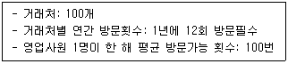
- 10명
- 12명
- 14명
- 18명
- 20명
(정답률: 49%)
2과목: 상권분석
26. 두 도시 A, B의 거리는 12km, A시의 인구는 20만 명, B시의 인구는 5만 명이다. Converse의 상권분기점 분석법에 따른 도시 간의 상권경계는 B시로부터 얼마나 떨어진 곳에 형성되겠는가?
- 3km
- 4km
- 6km
- 8km
- 9km
(정답률: 20%)
27. 국토의 계획 및 이용에 관한 법률(법률 제18310호, 2021. 7. 20., 타법개정)에 의거한 주거 및 교육 환경보호나 청소년 보호 등의 목적으로 오염물질 배출시설, 청소년 유해시설 등 특정시설의 입지를 제한할 필요가 있는 용도지구에 해당하는 것으로 가장 옳은 것은?
- 청소년보호지구
- 보호지구
- 복합용도지구
- 특정용도제한지구
- 개발제한지구
(정답률: 30%)
28. 입지의사결정 과정에서 점포의 매력도에 영향을 미치는 입지조건 평가에 대한 설명으로 가장 옳지 않은 것은?
- 상권단절요인에는 하천, 학교, 종합병원, 공원, 주차장, 주유소 등이 있다.
- 주변을 지나는 유동인구의 수보다는 인구특성과 이동방향 및 목적 등이 더 중요하다.
- 점포가 보조동선 보다는 주동선상에 위치하거나 가까울수록 소비자 유입에 유리하다.
- 점포나 부지형태는 정방형이 장방형보다 가시성이나 접근성 측면에서 유리하다.
- 층고가 높으면 외부가시성이 좋고 내부에 쾌적한 환경을 조성하기 유리하다.
(정답률: 39%)
29. 소비자 K가 거주하는 어느 지역에 아래 조건과 같이 3개의 슈퍼가 있는 경우, Huff모델을 사용하여 K의 이용확률이 가장 높은 점포와 해당 점포에 대한 이용확률을 추정한 것으로 가장 옳은 것은? (단, 거리와 점포면적에 대한 민감도계수가 –2와 3이라고 가정함)
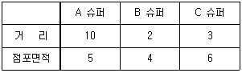
- C 슈퍼, 57%
- A 슈퍼, 50%
- B 슈퍼, 50%
- A 슈퍼, 44%
- B 슈퍼, 33%
(정답률: 36%)
30. 소매입지를 선정하기 위해 활용되는 각종 지수(index)에 대한 설명으로 가장 옳지 않은 것은?
- 시장포화지수(IRS)는 특정 시장 내에서 주어진 제품계열에 대한 점포면적당 잠재매출액의 크기이다.
- 구매력지수(BPI)는 주로 통계자료의 수집단위가 되는 행정구역별로 계산할 수 있다.
- 시장확장잠재력지수(MEP)는 지역 내 소비자들이 타지역에서 쇼핑하는 비율을 고려하여 계산한다.
- 판매활동지수(SAI)는 특정지역의 총면적당 점포면적 총량의 비율을 말한다.
- 구매력지수(BPI)는 주로 인구, 소매 매출액, 유효소득 등의 요인을 이용하여 측정한다.
(정답률: 29%)
31. 유추법(analog method)을 통해 신규점포에 대한 수요를 추정하는 과정에 대한 설명으로 가장 옳지 않은 것은?
- 비교점포는 통계분석 대신 주관적 판단을 주로 사용해서 선정한다.
- 신규점포의 수요는 비교점포의 상권정보를 활용해서 산정한다.
- 비교점포의 상권을 단위거리에 따라 구역(zone)으로 나눈다.
- 비교점포의 구역별 고객1인당 매출액을 추정한다.
- 수요예측을 위해 반드시 2개 이상의 비교점포를 선정해야 한다.
(정답률: 26%)
32. 주변에 인접한 점포가 없이 큰길가에 위치한 자유입지인 고립된 점포입지에 관한 설명 중 가장 옳지 않은 것은?
- 대형점포를 개설할 경우 관련상품의 일괄구매(onestopshopping)를 가능하게 한다.
- 토지 및 건물의 가격이 상대적으로 싸다.
- 개점 초기에 소비자를 점포 내로 유인하기가 쉽다.
- 고정자산에 투입된 비용이 적어서 상대적으로 상품가격의 할인에 융통성이 있다.
- 비교구매를 원하는 소비자에게는 매력적이지 않다.
(정답률: 26%)
33. 상가건물 임대차보호법(법률 제18675호, 2022.1.4.,일부개정)에서 규정하는 환산보증금의 계산식으로 가장 옳은 것은?
- 보증금+(월임차료×24)
- 보증금+(월임차료×36)
- 보증금+(월임차료×60)
- 보증금+(월임차료×100)
- 보증금+(월임차료×120)
(정답률: 27%)
34. 상권과 관련된 가맹본부와 가맹점 사이의 관계에 대한 설명으로 가장 옳지 않은 것은?
- 가맹계약 체결 시 가맹본부는 가맹점사업자의 영업지역을 설정하여 가맹계약서에 이를 기재하여야 한다.
- 정보공개서는 가맹본부의 재정상태, 임원 프로필, 직영점 및 가맹점 수 등과 같은 정보를 포함한다.
- 상권의 급격한 변화가 발생하는 경우에는 가맹본부의 경영전략상의 의사결정과정을 통해 기존 영업지역을 합리적으로 변경할 수 있다.
- 지역 환경에 따라 수익이 다를 수 있으므로 가맹희망자는 개점하려는 지역의 환경과 가맹본부에서 제시한 창업환경의 유사성을 면밀히 검토해야 한다.
- 가맹본부는 가맹계약을 위반하여 가맹계약 기간 중 가맹사업자의 영업지역 안에서 가맹사업자와 같은 업종의 자기 또는 계열회사의 직영점이나 가맹점을 설치하면 안 된다.
(정답률: 36%)
35. 상권 규정 요인에 대한 설명으로 가장 옳지 않은 것은?
- 상권을 규정하는 요인에는 시간요인과 비용요인이 있다.
- 공급측면에서 비용요인이 상대적으로 저렴할수록 상권은 축소된다.
- 재화의 이동에서 사람을 매개로 하는 소매상권은 재화의 종류에 따라 비용 지출이나 시간 사용이 달라지므로 상권의 크기도 달라진다.
- 수요측면에서 고가품, 고급품일수록 상권범위가 확대된다.
- 시간요인은 상품가치를 좌우하는 보존성이 강한 재화일수록 상권이 확대된다.
(정답률: 33%)
36. 상권의 유형에 대한 설명으로 가장 옳지 않은 것은?
- 도심상권은 중심업무지구(CBD)를 포함하며 상권의 범위가 넓고 소비자들의 평균 체류시간이 길다.
- 근린상권은 점포인근 거주자들이 주요 소비자로 생활밀착형 업종의 점포들이 입지하는 경향이 있다.
- 부도심상권은 간선도로의 결절점이나 역세권을 중심으로 형성되는 경우가 많으며 도시전체의 소비자를 유인한다.
- 역세권상권은 지하철이나 철도역을 중심으로 형성되며 지상과 지하의 입체적 상권으로 고밀도 개발이 이루어지는 경우가 많다.
- 아파트상권은 고정고객의 비중이 높아 안정적인 수요확보가 가능하지만 외부와 단절되는 경우가 많아 외부고객을 유치하는 상권확대가능성이 낮은 편이다.
(정답률: 50%)
37. 상권분석에서 활용하는 소비자 대상 조사기법 중 조사대상의 선정이 내점객조사법과 가장 유사한 것은?
- 고객점표법
- 점두조사법
- 가정방문조사법
- 지역할당조사법
- 편의추출조사법
(정답률: 34%)
38. 소매점포의 상권범위나 상권형태는 소매점포를 이용하는 소비자의 공간적 분포를 나타낸다. 이에 대한 설명으로 가장 옳지 않은 것은?
- 소매점포의 면적이 비슷하더라도 업종이나 업태에 따라 개별점포의 상권범위는 차이가 날 수 있다.
- 동일 점포라도 소매전략에 따른 판촉활동 등의 차이에 따라 시기별로 점포의 상권범위는 변화한다.
- 상권의 형태는 점포를 중심으로 일정한 거리 간격의 동심원 형태로 나타난다.
- 동일한 지역에 인접하여 입지한 경우에도 점포 규모에 따라 개별 점포의 상권범위는 차이가 날 수 있다.
- 동일한 위치에서 입지조건의 변화가 없고 점포의 전략적 변화가 없어도 상권의 범위는 유동적으로 변화하기 마련이다.
(정답률: 42%)
39. 소매점의 상권을 공간적으로 구획하는 과정에서 상권의 지리적 경계를 분석할 때 활용할 수 있는 기법이나 도구에 해당하지 않는 것은?
- 내점객 및 거주자 대상 서베이법(survey technique)
- 티센다각형(thiessen polygon)
- 소매매트릭스분석(retail matrix analysis)
- 고객점표법(CST: customer spotting technique)
- 컨버스의 분기점분석(Converse's breaking-point analysis)
(정답률: 30%)
40. 다양한 소매점포 유형들 중에서 광범위한 상권범위를 갖는 대형상업시설인 쇼핑센터의 전략적 특성은 테넌트믹스(tenant mix)를 통해 결정된다고 한다. 상업시설의 주요 임차인으로서 시설 전체의 성격을 결정하는 앵커점포(anchor store)에 해당하는 것으로 가장 옳은 것은?
- 마그넷 스토어
- 특수테넌트
- 핵점포
- 일반테넌트
- 보조핵점포
(정답률: 36%)
41. 넬슨(R.L. Nelson)의 소매입지 선정원리 중에서 아래 글상자의 괄호 안에 들어갈 내용을 순서대로 나열한 것으로 가장 옳은 것은?
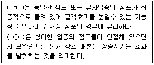
- ㉠ 양립성, ㉡ 누적적 흡인력
- ㉠ 양립성, ㉡ 경합의 최소성
- ㉠ 누적적 흡인력, ㉡ 양립성
- ㉠ 상권의 잠재력, ㉡ 경합의 최소성
- ㉠ 누적적 흡인력, ㉡ 경합의 최소성
(정답률: 41%)
42. 상권분석 기법과 관련한 특성을 설명하는 내용으로 그 연결이 가장 옳지 않은 것은?
- 회귀모형은 원인과 결과변수 사이의 관계를 분석하여 원인변수의 영향력을 파악한다.
- 다항로짓(MNL)모형은 점포이미지와 입지특성을 반영하여 상권을 분석할 수 있다.
- Christaller의 중심지이론은 중심지와 배후지의 관계를 규명하고 중심지체계 및 중심지 공간배열의 원리를 설명한다.
- 체크리스트법은 소비자의 점포선택 행동을 결정론적이 아닌 확률론적으로 인식한다.
- 유사점포법에서는 상권의 범위와 특성을 파악하기 위하여 CST map을 활용한다.
(정답률: 41%)
43. 소매점의 상품구색과 상권 및 입지 특성에 대한 설명 중에서 가장 옳지 않은 것은?
- 편의품 소매점의 상권은 도보로 이동이 가능한 범위 이내로 제한되는 경우가 많다.
- 편의품은 일반적으로 소비자가 점포선택에 구매노력을 상대적으로 덜 기울이기 때문에 주택이나 사무실 등에 가까운 입지가 유리하다.
- 선매품 소매점은 편의품 보다 상권의 위계에서 높은 단계의 소매 중심지나 상점가에 입지하여 넓은 범위의 상권을 가져야 한다.
- 전문품 소매점의 경우 고객이 지역적으로 밀집되어 있어서 상권의 밀도는 높고 범위는 좁은 것이 특징이다.
- 동일 업종이라 하더라도 점포의 규모나 품목구성에 따라 상권의 범위가 달라진다.
(정답률: 41%)
44. 입지조건에 대한 일반적인 평가 중에서 가장 옳은 것은?
- 방사(放射)형 도로구조에서 분기점에 위치하는 것은 불리하다.
- 일방통행로에 위치한 점포는 시계성(가시성)과 교통접근성에 있어서 유리하다.
- 곡선형 도로의 안쪽입지는 바깥쪽입지보다 시계성(가시성) 확보 측면에서 불리하다.
- 주도로와 연결된 내리막이나 오르막 보조도로에 위치한 점포는 양호한 입지이다.
- 차량 출입구는 교차로 교통정체에 의한 방해를 피하기 위해 모퉁이에 근접할수록 좋다.
(정답률: 40%)
45. 상권 범위내 소비자들이 특정점포를 선택할 확률을 근거로 예상매출액을 추정할 수 있는 상권분석 기법들로 가장 옳은 것은?
- 유사점포법, Huff모델
- 체크리스트법, 유사점포법
- 회귀분석법, 체크리스트법
- Huff모델, MNL모델
- MNL모델, 회귀분석법
(정답률: 29%)
3과목: 유통마케팅
46. 유통업 고객관계관리 활동의 성과 평가기준으로서 가장 옳은 것은?
- 시장점유율의 크기
- 판매량의 안정성
- 고객자산(customer equity)의 크기
- 고객정보의 신뢰성
- 시장의 다변화 정도
(정답률: 23%)
47. 아래 글상자의 설명을 모두 만족하는 유통마케팅조사의 표본추출방법으로 가장 옳은 것은?
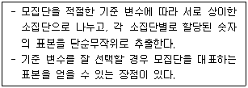
- 할당표본추출
- 군집표본추출
- 판단표본추출
- 층화표본추출
- 편의표본추출
(정답률: 24%)
48. 아래 글상자에서 설명하는 경로구성원의 공헌도 평가기법이 평가하는 요소로 가장 옳은 것은?
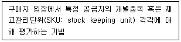
- 평당 총이익
- 직접제품이익
- 경로구성원 종합성과
- 경로구성원 총자산수익률
- 상시종업원당 총이익
(정답률: 34%)
49. 유통업체가 활용하는 자체 브랜드(PB: private brand)의 유형으로 가장 옳지 않은 것은?
- 제조업체 브랜드의 외형이나 명칭을 모방한 저가브랜드사용료를 지불한 제조업체 브랜드의 라이센스 브랜드
- 가격에 민감한 세분시장을 표적으로 하는 저가 브랜드
- 제조업체 브랜드와 품질과 가격에서 경쟁하는 프리미엄 브랜드
- 사용료를 지불한 제조업체 브랜드의 라이센스 브랜드
- 제조업체 브랜드를 모방한 대체품이지만 유통업체 브랜드임을 밝힌 유사 브랜드
(정답률: 18%)
50. 가격결정방식에 대한 설명으로 가장 옳지 않은 것은?
- 가격 탄력성이 1보다 클 경우 그 상품에 대한 수요는 가격비탄력적이라고 한다.
- 가격을 결정할 때 기업의 마케팅목표, 원가, 시장의 경쟁구조 등을 고려해야 한다.
- 제품의 생산과 판매를 위해 소요되는 모든 비용을 충당하고 기업이 목표로 한 이익을 낼 수 있는 수준에서 가격을 결정하는 방식을 원가중심 가격결정이라고 한다.
- 소비자가 제품에 대해 지각하는 가치에 따라 가격을 결정하는 것을 수요중심 가격결정이라고 한다.
- 자사제품의 원가나 수요보다도 경쟁제품의 가격을 토대로 가격을 결정하는 방식을 경쟁중심 가격결정이라고 한다.
(정답률: 36%)
51. 프랜차이즈 본부가 직영점을 설치하는 이유로 가장 옳지 않은 것은?
- 본부 직영점들은 프랜차이즈 시스템 내의 다른 점포들에 대한 모델점포로서의 기능을 할 수 있다.
- 직영점들은 프랜차이즈 시스템의 초기에 프랜차이즈 유통망의 성장을 촉진할 수 있다.
- 본부 직영점을 통해 점포운영상의 문제점들을 직접 피부로 파악할 수 있다.
- 본부가 전체 프랜차이즈 시스템의 운영에 대해 강력한 통제를 유지할 수 있는 가능성을 높일 수 있다.
- 본부는 가맹점 증가보다 직영점을 통해 가입비, 교육비 등의 수입을 보다 적극적으로 확보할 수 있다.
(정답률: 50%)
52. 고객충성도와 관련된 설명으로 가장 옳지 않은 것은?
- 충성도는 상호성과 다중성이라는 두 가지 속성을 가지고 있다.
- 충성도는 기업이 고객에게 물질적, 정신적 혜택을 제공하고, 고객이 긍정적인 반응을 해야 발생한다.
- 고객 만족도가 높아지면 재구매 비율이 높아지고, 이에 따라 충성도도 높아진다.
- 타성적 충성도(inertial loyalty)는 특정 상품에 대해 습관에 따라 반복적으로 나타나는 충성도이다.
- 잠재적 충성도(latent loyalty)는 호감도는 낮지만 반복구매가 높은 경우에 발생하는 충성도이다.
(정답률: 36%)
53. 효과적인 진열을 위해 활용하는 IP(item presentation), PP(point of presentation), VP(visual presentation)에 대한 설명으로 가장 옳지 않은 것은?
- IP의 목적은 판매포인트 전달과 판매유도이다.
- IP는 고객이 하나의 상품에 대한 구입의사를 결정할 수 있도록 돕기 위한 진열이다.
- VP의 목적은 중점상품과 테마에 따른 매장 전체 이미지 표현이다.
- VP는 점포나 매장 입구에서 유행, 인기, 계절상품 등을 제안하기 위한 진열이다.
- PP는 어디에 어떤 상품이 있는가를 알려주는 진열이다.
(정답률: 37%)
54. 매장 배치에 관한 아래의 내용 중에서 옳게 설명된 것은?
- 백화점 등 고급점포는 매장의 효율을 높이기 위해 그리드(grid) 방식의 고객동선 설계가 바람직하다.
- 복합점포매장의 경우, 고가의 전문매장, 가구매장 등은 고층이나 층 모서리에 배치하는 것이 바람직하다.
- 충동구매를 일으키는 상품은 점포 후면에 진열, 배치하는 것이 바람직하다.
- 층수가 높은 점포는 층수가 높을수록 그 공간가치가 높아진다.
- 넓은 바닥면적이 필요한 상품은 통행량이 많은 곳에 배치하여야 한다.
(정답률: 35%)
55. 산업재에 적합한 촉진수단으로 가장 옳은 것은?
- 광고
- 홍보
- 인적판매
- PR
- 콘테스트
(정답률: 33%)
56. 유통마케팅 조사 절차의 첫 번째 단계로서 가장 옳은 것은?
- 조사 설계
- 자료 수집
- 모집단 설정
- 조사문제 정의
- 조사 타당성 평가
(정답률: 35%)
57. 브랜드 관리와 관련된 설명으로 가장 옳지 않은 것은?
- 브랜드 자산(brand equity)이란 해당 브랜드를 가졌기 때문에 발생하는 차별적 브랜드 가치를 말한다.
- 브랜드 재인(brand recognition)은 브랜드가 과거에 본인에게 노출된 적이 있음을 알아차리는 것이다.
- 브랜드 인지도(brand awareness)가 높을수록 브랜드 자산(brand equity)이 증가한다고 볼 수 있다.
- 브랜드 인지도(brand awareness)는 브랜드 이미지의 풍부함을 의미한다.
- 브랜드 회상(brand recall)이란 브랜드 정보를 기억으로 부터 인출하는 것을 말한다.
(정답률: 24%)
58. 핵심고객관리(key account management)의 대상이 되는 핵심고객의 특징에 대한 설명으로 가장 옳지 않은 것은?
- 대량 구매를 하거나 구매점유율이 높다.
- 구매과정에서 기능적으로 상이한 여러 분야(생산, 배송, 재고 등)의 사람이 관여한다.
- 지리적으로 분산된 조직단위(상점, 지점, 제조공장 등)를 위해 구매한다.
- 전문화된 지원과 특화된 서비스(로지스틱스, 재고관리 등)가 필요하다.
- 효과적이고 수익성 높은 거래의 수단으로 구매자와 판매자 간의 일회성 협력관계를 요구한다.
(정답률: 49%)
59. 소매업체 대상 판촉프로그램에 대한 설명으로 옳지 않은 것은?
- 가격할인이란 일정 기간의 구매량에 대해 가격을 할인해주는 방법을 말한다.
- 리베이트란 진열위치, 판촉행사, 매출실적 등 소매상의 협력 정도에 따라 판매금액의 일정률에 해당하는 금액을 반환해 주는 것을 말한다.
- 인적지원이란 월 매출이 일정수준 이상인 점포에는 판촉사원을 고정적으로 배치하고 그 외 관리대상이 될 만한 점포에는 판촉사원을 순회시키는 것을 말한다.
- 소매점 경영지도란 소매상에게 매장연출방법, 상권분석 등의 경영지도를 통해 매출증대를 돕는 것을 말한다.
- 할증판촉이란 소매점이 진행하고 있는 특정 제품 및 세일 관련 광고 비용 일부를 부담하는 것을 말한다.
(정답률: 36%)
60. 아래 글상자에서 설명하는 경우에 적용할 수 있는 유통 마케팅전략으로 가장 옳은 것은?
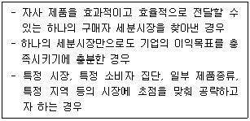
- 시장확대전략
- 비차별화전략
- 집중화전략
- 차별화전략
- 원가우위전략
(정답률: 49%)
61. 점포의 매장면적에 관한 설명으로 가장 옳지 않은 것은?
- 점포면적은 매장면적과 비매장면적으로 구분한다.
- 각 상품부문의 면적당 생산성을 고려하여 매장면적을 배분한다.
- 일반적으로 전체 면적에서 차지하는 매장면적의 비율은 점포의 규모가 클수록 높아진다.
- 매장면적을 배분할 때는 소비자의 편의성에 대한 요구, 효과적인 진열과 배치 등도 고려해야 한다.
- 전체 면적 중 매장면적의 비율은 고급점포일수록 낮아 진다.
(정답률: 25%)
62. 제조업자가 중간상들과의 거래에서 사용하는 가격할인 유형 중 판매촉진지원금에 대한 설명으로 옳은 것은?
- 중간상이 제품을 현금으로 구매할 경우 제조업자가 판매대금의 일부를 할인해 주는 것이다.
- 중간상이 제조업자가 일반적으로 수행해야 할 업무의 일부를 수행할 경우 경비의 일부를 제조업자가 부담하는 것이다.
- 중간상이 제조업자를 대신하여 지역광고를 하거나 판촉을 실시할 경우 지급하는 보조금이다.
- 중간상이 대량구매를 하는 경우 해주는 현금할인이다.
- 중간상이 하자있는 제품, 질이 떨어지는 제품 등을 구매할 때 지급하는 지원금이다.
(정답률: 40%)
63. 고객생애가치(CLV: customer lifetime value)에 대한 설명으로 가장 옳은 것은?
- 업태에 따라 고객생애가치는 다르게 추정될 수 있다.
- 고객생애가치는 고객과 기업 간의 정성적 관계 가치이므로 수치화하여 측정하기 어렵다.
- 고객생애가치는 고객이 일생동안 구매를 통해 기업에게 기여하는 수익을 미래가치로 환산한 금액이다.
- 고객생애가치는 고객점유율(customer share)에 기반하여 추정할 수 있다.
- 고객의 생애가치는 고객의 이용실적, 고객당 비용, 고객이탈가능성 및 거래기간 등을 통해 추정할 수 있다.
(정답률: 24%)
64. 아래 글상자에서 설명하는 가격전략으로 가장 옳은 것은?
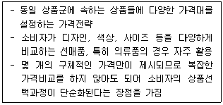
- 가격계열화전략(price lining strategy)
- 가격품목화전략(price itemizing strategy)
- 가격단위화전략(price unitizing strategy)
- 가격구색화전략(price assortment strategy)
- 가격믹스전략(price mix strategy)
(정답률: 25%)
65. 마이클 포터(Michael Porter)의 5요인모델(5-Forces Model)에 근거한 설명으로 가장 옳지 않은 것은?
- 기존 기업들은 높은 진입장벽의 구축을 통해 시장매력도를 높일 수 있다.
- 구매자의 교섭력이 높아질수록 시장 매력도는 낮아진다.
- 시장매력도는 산업 전체의 평균 수익성을 의미한다.
- 경쟁자, 공급자, 구매자가 분명하게 구분되는 것을 가정한다.
- 대체재가 많을수록 시장의 매력도는 높아진다.
(정답률: 41%)
66. 상품구색의 다양성(variety)에 대한 설명으로 가장 옳지 않은 것은?
- 취급하는 상품계열의 수가 어느 정도 되는가를 의미한다.
- 취급하는 상품품목의 수가 얼마나 되느냐와 관련된다.
- 동일한 성능이나 용도를 가진 상품들을 하나의 상품군으로 취급하기도 한다.
- 동일한 고객층 또는 동일한 가격대 등을 하나의 상품군으로 취급하기도 한다.
- 전문점은 백화점이나 양판점에 비해 상품구색의 다양성이 한정되어 있다.
(정답률: 18%)
67. 업체별 머천다이징의 특징으로 가장 옳지 않은 것은?
- 전문점의 머천다이징은 전문성의 표현과 개성전개, 표적의 명확화를 바탕으로 구성한다.
- 할인점은 저비용, 저마진, 대량판매의 효율성을 바탕으로 구성한다.
- 선매품점은 계절욕구, 패션지향에 대한 특성과 개성표현이 잘 되도록 구성한다.
- 백화점은 계절성, 편리성, 친절성을 바탕으로 효율적 판매가 가능하도록 구성한다.
- 슈퍼마켓은 합리적 상품회전율과 상품품목별 효율 중심을 바탕으로 구성한다.
(정답률: 27%)
68. 고객관계를 강화하기 위한 고객관리전략으로 가장 옳지 않은 것은?
- 잠재가능고객 파악 및 차별적 프로모션 실행
- 구매 후 고객관리를 통한 관계 심화
- 고객충성도의 주기적 측정 및 관리
- 적극적이고 체계적인 불평관리
- 고객이탈을 방지하는 인센티브 제공
(정답률: 26%)
69. 판매원의 판매활동에 대한 설명으로 가장 옳지 않은 것은?
- 상품과 대금의 교환을 실현시키는 활동이다.
- 상품의 효용과 가치에 대한 정보를 제공하는 활동이다.
- 제한된 공간에서 소매점의 이익을 극대화하기 위한 활동이다.
- 고객이 상품과 서비스를 구매하도록 설득하는 활동이다.
- 대화를 통해 고객의 욕구를 파악하고 그에 부합되는 제품을 추천하는 활동이다.
(정답률: 30%)
70. 판매 결정을 촉구하는 판매원의 행동기법으로 가장 옳지 않은 것은?
- 두 가지 대안 중 어느 한쪽을 선택하도록 유도한다.
- 제품을 구매함으로써 얻게 되는 여러 이점을 설명한다.
- 고객이 어느 정도 사고 싶은 마음이 있는지 파악할 수 있는 질문을 한다.
- 고객에게 어필할 수 있는 주요 이익을 요약 설명한다.
- 구매하지 않아도 된다는 태도를 취하여 소비자를 유혹하는게 아니라는 신뢰감을 갖게 한다.
(정답률: 41%)
4과목: 유통정보
71. 인터넷 상거래의 비즈니스 모델 유형별로 세부 비즈니스 모델을 짝지어 놓은 것으로 가장 옳지 않은 것은?
- 소매 모델 - 소비자에게 제품이나 서비스 판매 - 온·오프 병행소매
- 중개 모델 - 판매자와 구매자 연결 - 이마켓플레이스
- 콘텐츠서비스 모델 - 이용자에게 콘텐츠 제공 - 포털
- 광고 모델 - 인터넷을 매체로 광고 - 배너광고
- 커뮤니티 모델 - 공통관심의 이용자들에게 만남의 장제공 - 검색 에이전트
(정답률: 28%)
72. 아래 글상자에서 암묵지에 해당하는 내용만을 모두 나열한 것으로 가장 옳은 것은?
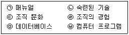
- ㉠, ㉢, ㉣
- ㉠, ㉢, ㉤
- ㉡, ㉢, ㉣
- ㉡, ㉢, ㉣, ㉥
- ㉢, ㉣, ㉤, ㉥
(정답률: 38%)
73. 베스트 오브 브리드(best of breed)전략을 통해 ERP 시스템을 구축할 경우에 대한 설명으로 가장 옳지 않은 것은?
- 상대적으로 낮은 비용으로 시스템을 구축할 수 있다.
- 특정 기능 구현에 있어서 고도의 탁월한 기능성을 발휘함으로써 보다 많은 경쟁우위를 창출하도록 해준다.
- 별도의 미들웨어 개발없이 모듈간 통합을 할 수 있다.
- 소프트웨어 선택, 프로젝트 관리 및 업그레이드에 더 많은 시간과 자원이 소요된다.
- 고도의 전문성을 지닌 IT자원이 요구된다.
(정답률: 16%)
74. 데이터의 깊이와 분석차원을 마음대로 조정해가며 분석하는 OLAP(online analytical processing)의 기능으로 가장 옳은 것은?
- 분해(slice & dice)
- 리포팅(reporting)
- 드릴링(drilling)
- 피보팅(pivoting)
- 필터링(filtering)
(정답률: 43%)
75. 절차별 모바일 결제 서비스에 대한 내용 중 괄호 안에 들어갈 용어를 순서대로 나열한 것으로 가장 옳은 것은?
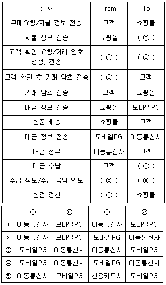
- ①
- ②
- ③
- ④
- ⑤
(정답률: 12%)
76. 4차 산업혁명에 따라 파괴적인 혁신을 이루는 기하급수기술(exponential technology)로 가장 옳지 않은 것은?
- 3D 프린팅(3D printing)
- 인공지능(artificial intelligence)
- 로봇공학(robotics)
- 사물인터넷(internet of things)
- 레거시 시스템(legacy system)
(정답률: 43%)
77. NoSQL에 관련된 내용으로 가장 옳지 않은 것은?
- 화면과 개발로직을 고려한 데이터 셋을 구성하여 일반적인 데이터 모델링이라기 보다는 파일구조 설계에 가깝다고 볼 수 있다.
- 데이터 항목을 클러스터 환경에 자동적으로 분할하여 적재한다.
- 스키마 없이 데이터를 상대적으로 자유롭게 저장한다.
- 대규모의 데이터를 유연하게 처리할 수 있는 전통적인 관계형 데이터베이스 시스템이다.
- 간단한 API Call 또는 HTTP를 통한 단순한 접근 인터페이스를 제공한다.
(정답률: 27%)
78. 유통업체에서 활용하는 비즈니스 애널리틱스(analytics)의 유형에 대한 설명으로 가장 옳지 않은 것은?
- 대시보드(dashboards)는 데이터 분석결과에 대한 이용자 이해도를 높이기 위한 데이터 시각화 기술이다.
- 스코어카드(scorecards)는 데이터베이스로부터 정보를 추출하는 주요 매커니즘이다.
- 데이터 마이닝(data mining)은 대규모 데이터를 분석하여 숨겨진 상관관계 및 트렌드를 발견하는 기법이다.
- 리포트(reports)는 비즈니스에서 요구하는 정보를 포맷화하고 조직화하기 위해 변환시켜 표현하는 것이다.
- 알림(alert)은 특정 사건이 발생했을 때 이를 관리자에게 인지시켜주는 자동화된 기능이다.
(정답률: 29%)
79. 아래 글상자의 괄호 안에 들어갈 내용을 순서대로 나열한 것으로 가장 옳은 것은?
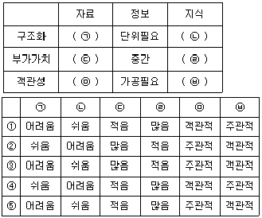
- ①
- ②
- ③
- ④
- ⑤
(정답률: 27%)
80. 고객이 기존에 구매한 상품보다 가치가 높고, 성능이 우수한 상품을 추천하는 시스템을 활용하는 것을 지칭하는 용어로 가장 옳은 것은?
- 클릭 앤드 모타르(click and mortar)
- 옴니채널(omnichannel)
- 서비스 시점(point of service)
- 크로스 셀링(cross selling)
- 업 셀링(up selling)
(정답률: 47%)
81. 아래 글상자가 설명하는 용어로 가장 옳은 것은?
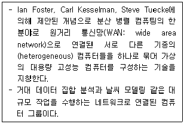
- 클라우드 컴퓨팅
- 그리드 컴퓨팅
- 그린 컴퓨팅
- 클러스터 컴퓨팅
- 가상 컴퓨팅
(정답률: 26%)
82. 유통업체의 지식관리 시스템 구축 및 활용과 관련된 설명으로 가장 옳은 것은?
- 기업은 지식에 대한 유지관리를 위해 불필요한 지식도 철저하게 잘 보존해야 한다.
- 지식관리 시스템을 도입하면 조직 내부의 지식관리에 대한 모든 문제를 해결할 수 있다.
- 지식관리 시스템 활용에 있어, 직원이 보유한 업무처리 지식에 대한 공유 방지를 위해 철저하게 통제한다.
- 지식관리 시스템 구축은 단기적 관점에서 경쟁력을 강화하기 위한 프로젝트로 단기 매출 증대에 기여 하도록 시스템을 구축해야 한다.
- 성공적인 도입을 위해서 초기에는 소규모로 시스템을 도입하고, 성과가 나타나기 시작하면 전사적으로 지식관리 시스템을 확장하는 것이 유용하다.
(정답률: 35%)
83. 빅데이터 분석과 관련된 설명으로 가장 옳지 않은 것은?
- 텍스트 마이닝(text mining)은 자연어를 분석하고, 자연어 속에 숨겨진 정보를 파악하는 데이터 분석기법이다.
- 오피니언 마이닝(opinion mining)은 특정한 상품 및서비스에 대한 시장 규모 예측, 고객 구전효과 분석에 활용되는 데이터 분석 기법이다.
- 소셜 네트워크분석(social network analysis)은 그래프 이론을 활용해서 소셜 네트워크의 연구구조 및 강도를 분석하는 데이터 분석 기법이다.
- 군집 분석(cluster analysis)은 비슷한 특성을 가지고 있는 데이터를 통합해서 유사한 특성으로 군집화하는 데이터 분석 기법이다.
- 회귀 분석(regression analysis)은 종속변수와 독립변수의 상관관계를 분석하는 데이터 분석 기법이다.
(정답률: 19%)
84. 아래 글상자의 내용을 의사결정에 활용되는 시뮬레이션 절차대로 바르게 나열한 것으로 가장 옳은 것은?
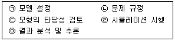
- ㉠ - ㉡ - ㉢ - ㉣ - ㉤
- ㉠ - ㉡ - ㉣ - ㉢ - ㉤
- ㉠ - ㉢ - ㉡ - ㉣ - ㉤
- ㉡ - ㉠ - ㉢ - ㉣ - ㉤
- ㉡ - ㉠ - ㉣ - ㉢ - ㉤
(정답률: 32%)
85. 아래 글상자에서 설명하는 내용에 부합하는 용어로 가장 옳은 것은?
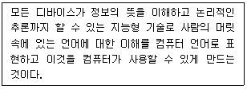
- 고퍼(gopher)
- 냅스터(napster)
- 시맨틱웹(semantic-Web)
- 오페라(opera)
- 웹클리퍼(Web-clipper)
(정답률: 29%)
86. 식별코드와 바코드에 대한 설명으로 가장 옳지 않은 것은?
- GS1 표준 상품 식별코드는 전세계적으로 널리 사용되는 '사실상의(de facto)' 국제 표준이다.
- 상품 식별코드 자체에는 상품명, 가격, 내용물 등에 대한 정보가 포함되어 있다.
- 바코드는 식별코드를 기계가 읽을 수 있도록 막대 모양으로 표현한 것이다.
- GTIN은 기업에서 자사의 거래단품을 고유하게 식별하는데 사용하는 국제표준상품코드이다.
- ITF-14는 GTIN-14코드체계(물류단위 박스)를 표시하는데 사용되는 바코드 심벌이다.
(정답률: 36%)
87. QR 코드에 대한 설명으로 가장 옳지 않은 것은?
- 1994년 일본의 덴소 웨이브(DENSO WAVE)에서 데이터를 빠르게 읽는 데 중점을 두고 개발 보급한 기술이다.
- 360° 어느 방향에서나 빠르게 데이터를 읽을 수 있다.
- 기존 바코드 기술과 비교할 때, 대용량 데이터의 저장이 가능하고, 고밀도 정보표현이 가능하다.
- 일부 찢어지거나 젖었을 때 오류를 복원하는 기능이 포함되어 있다.
- 바이너리(binary), 제어 코드를 제외한 모든 숫자와 문자를 처리할 수 있다.
(정답률: 20%)
88. 아래 글상자에서 설명하고 있는 용어로 가장 옳은 것은?
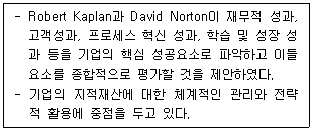
- IC Index
- 스칸디아네비게이터
- 균형성과표
- 기술요소평가법
- 무형자산모니터
(정답률: 27%)
89. 드론의 구성요인에 대한 설명으로 가장 옳지 않은 것은?
- 드론의 항법센서는 전자광학센서, 초분광센서, 적외선 센서 등이 있다.
- 탑재 컴퓨터는 드론을 운영하는 브레인 역할을 하는 컴퓨터로 드론의 위치, 모터, 배터리 상태 등을 확인할 수 있다.
- 드론 모터는 드론의 움직임이 가능하도록 지원하고, 배터리는 모터에 에너지를 제공한다.
- 드론 임무장비는 드론 비행을 하면서 특정한 임무를 하도록 관련 장비를 장착한다.
- 드론 프로펠러 및 프레임은 드론이 비행하도록 프레임 워크를 제공한다.
(정답률: 26%)
90. POS시스템의 특징에 대한 설명으로 가장 옳지 않은 것은?
- SKU별로 상품 정보를 파악할 수 있는 관리시스템으로 상품 판매동향을 파악할 수 있다.
- 모든 거래정보 및 영업정보를 즉시 파악할 수 있으므로 정보의 변화에 즉각 대응할 수 있는 배치(batch)시스템이다.
- 현장에서 발생하는 각종 거래 관련 데이터를 실시간으로 직접 컴퓨터에 전달하는 수작업이 필요 없는 온라인시스템이다.
- 고객과의 거래와 관련된 정보를 POS시스템을 통해 수집할 수 있다.
- POS를 통해 수집된 정보는 고객판촉 활동의 기초자료로 사용할 수 있다.
(정답률: 30%)